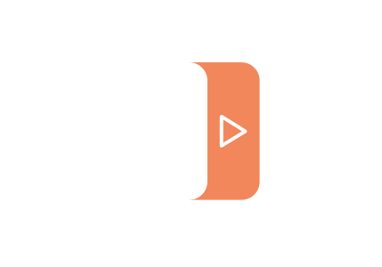
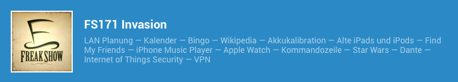
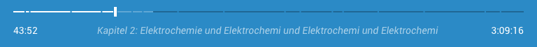
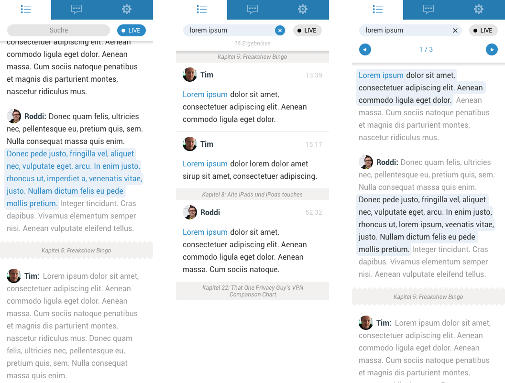

Podlove Web Player v4
Funktionen, Architektur und Ausblick
Über Mich
Alexander Heimbuch
UI Developer @Salesforce
Eigentlich was mit Medien studiert
Fetisch für JavaScript Frameworks
Twitter:
@zusatzstoff
Github:
github.com/alexander-heimbuch
Podcasts im Browser
Gretchenfrage
Nutzungsszenarien
Mobil
langfristig und passiv
Browser
kurzfristig und explorativ
Webplayer als Werkzeug
Effiziente Exploration
Sharing
Live Streams
Enablement
Tech Demo
Konzept
von Markus Stuhr
Basiskonzept

Kurz Beschreibung
Player Controls

Progressbar
Tabs
Architektur
Zustandsmaschine
Aktion
+
Zustand
=
Zustand*
Features
Theming, Kapitel, Embedding & mehr
Responsivität
Theming
Dynamische Komponenten
Header
Poster
Show
Episode
Subtitle
Controls
Track
Track Stepper
Chapter Stepper
Tabs
Info
Chapters
Download
Share
Audio
Orientierung
Sharing
Embedding
Mehrsprachen Support
Ausblick
Transkripte, Live-Streaming & mehr
Transkripte

HLS Live Streaming
Konzept noch in Evaluation
Ankündigung Startzeit
Re-Live
Podlove Web Player Configurator
Preview
Team
Markus Stuhr
Design
Alexander Heimbuch
Development
Tim Pritlove
Konzept
Support
Eric Teubert
Publisher Integration
Michael McCouman Jr.
Testing & Assets
Malik Aziz
Konzepte & Design
Alexandra von Criegern
Testing
Q & A
Dokumentation
docs.podlove.org/podlove-web-player
Präsentation
alexander.heimbu.ch/presentations/podlove-web-player-4